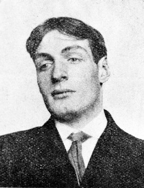

Monday, April the 8th, 2013
back to: title, date or indexes
I have not yet listened to it, but thanks to Strange Flowers I learn that the BBC recently broadcast a radio documentary about Arthur Cravan. This is the kind of thing that justifies the licence fee. But hurry! hurry!, it is only available until 12.00 AM on Thursday 1 January 2099!
